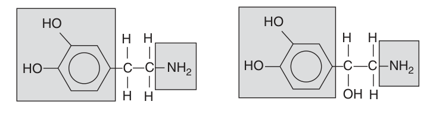
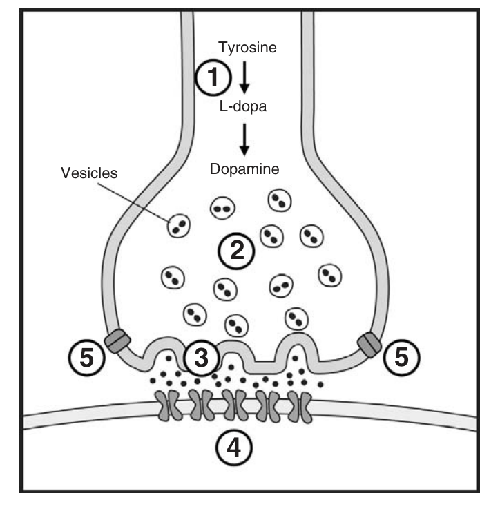
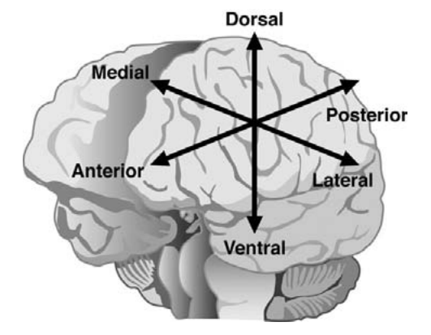
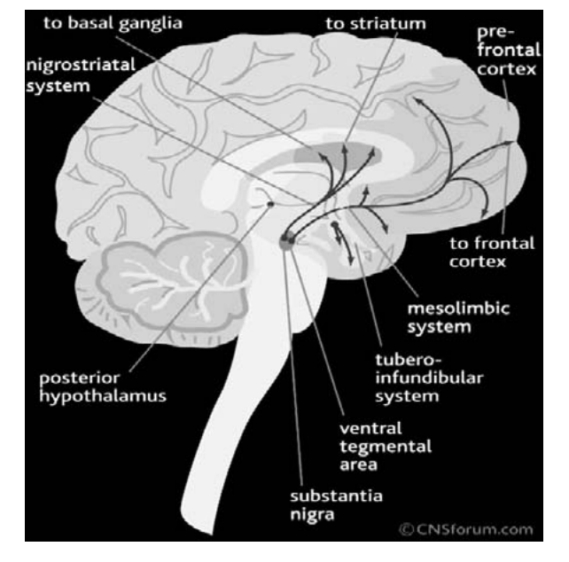

Chương 2 — Dopamine trong não bộ
2 Dopamine trong não
Trong chương này, tôi sẽ cố gắng mô tả ngắn gọn dopamine gồm những gì, nằm ở đâu trong não và có những tác động cơ bản nào. Phần lớn thông tin này sẽ được vận dụng trong Chương 3 và Chương 4 khi đề cập đến vai trò của dopamine trong hành vi bình thường và bất thường.
2.1 Hóa học thần kinh của dopamine
Giống như mọi chất dẫn truyền thần kinh trong não, dopamine là một chất hóa học chứa hầu hết các thành phần cấu tạo quan trọng của sự sống – carbon, hydro, oxy và nitơ. Đây là một chất dẫn truyền cổ xưa về mặt phát sinh chủng loại, được tìm thấy ở các loài thằn lằn và bò sát nguyên thủy tồn tại cách đây hàng chục triệu năm. Cấu trúc hóa học của dopamine được thể hiện trong Hình 2.1. Dopamine được biết đến như một catecholamine, xuất phát từ việc nó có một nhóm catechol và một nhóm amine nối với nhau bởi một cặp carbon bổ sung. Nhóm catechol gồm một vòng benzene lục giác (liên kết carbon) với hai nhóm hydroxyl (oxy và hydro, hay OH). Nhóm amine là một phân tử gồm một nguyên tử nitơ và hai nguyên tử hydro (NH2). Cấu trúc hóa học của dopamine không có gì quá đặc biệt, ở chỗ các nguyên tử và phân tử của nó bắt nguồn từ một số nguyên tố phổ biến nhất trên Trái Đất và đặc biệt là những nguyên tố có trong các hợp chất hữu cơ. Đặc biệt, carbon rất thiết yếu đối với sự sống trên Trái Đất, một phần vì nó rất dễ tạo liên kết với các phân tử sinh học khác. Một catecholamine nổi tiếng khác có cấu trúc hóa học gần gũi với dopamine là norepinephrine (còn gọi là noradrenaline), được tổng hợp từ dopamine bằng cách thêm một nguyên tử oxy vào một trong các nguyên tử hydro để tạo thành một nhóm hydroxyl bổ sung nằm kề cặp carbon nối giữa nhóm catechol và nhóm amine (Hình 2.1).1 Một chất dẫn truyền thần kinh lớn thứ ba
1 Trong cuốn sách này, thuật ngữ “norepinephrine” sẽ được sử dụng thay cho thuật ngữ ít phổ biến hơn là “noradrenaline”; tuy nhiên, “noradrenergic” sẽ được dùng làm dạng tính từ của “norepinephrine”, theo thông lệ.

có nhóm amine nhưng thiếu cấu trúc catechol là serotonin (còn gọi là 5-hydroxytryptamine, hay 5-HT), được xếp vào nhóm indoleamine. Các chất dẫn truyền thần kinh quan trọng khác như acetylcholine và glutamate không có cả nhóm catechol lẫn nhóm amine. Một bài tổng quan hay về hóa học thần kinh của dopamine và các chất dẫn truyền thần kinh khác được trình bày trong Cooper và cộng sự (2002).
Cấu trúc hóa học chính xác của dopamine (hoặc bất kỳ chất dẫn truyền thần kinh nào khác) không nhất thiết phản ánh những gì nó làm trong não. Ví dụ, mặc dù có cấu trúc hóa học gần như giống hệt nhau và đều có tác dụng kích thích chung lên hành vi, dopamine và norepinephrine lại có các tác động hành vi và sinh lý rất khác nhau, và thường (thậm chí có lẽ là phần lớn) ức chế tác động của nhau, như sẽ được thảo luận sau. Tương tự, apomorphine bắt chước tác động của dopamine tại synapse cũng như trong các tác động hành vi của nó (chẳng hạn tăng cường khám phá, hoạt động vận động, v.v.), nhưng nó cũng có cấu trúc hóa học rất giống với thuốc morphine, vốn là một chất giảm đau mạnh.
Dopamine và tất cả các chất dẫn truyền thần kinh khác tham gia vào một quá trình dẫn truyền thần kinh mà ở nhiều khía cạnh giống như một chiến dịch quân sự (xem Hình 2.2). Ở vùng gần thân tế bào dopaminergic, tế bào tạo ra chất dopa từ tyrosine (một chất có trong protein) nhờ enzyme tyrosine hydroxylase, enzyme này gắn thêm một nhóm hydroxyl (OH) vào tyrosine, và chất cuối cùng là dopamine sau đó được tạo ra bằng cách tách một nhóm carboxyl (C-O-O-H) và loại bỏ CO2 khỏi nó thông qua tác động của dopa decarboxylase (Bước 1). Toàn bộ quá trình này giống như việc tập kết và lưu trữ vũ khí cùng các vật tư quân sự khác. Sau khi được tạo ra, sự di chuyển của dopamine giống như một tuyến tiếp vận hậu cần khi nó đi dọc theo sợi trục của neuron và cuối cùng đến đầu tận cùng của sợi trục (Bước 2). Tại đây, dopamine được nạp vào các túi synap cho đến khi được giải phóng tại màng của neuron thứ nhất (được gọi là màng tiền synapse) (Bước 3). Một loại thuốc nổi tiếng giúp “dỡ hàng” dopamine tại màng tiền synapse là amphetamine. Khi đến màng tiền synapse, các phân tử dopamine băng qua khe synapse, một khoảng trống nhỏ chứa đầy dịch chỉ rộng
20–40 nanomet (chưa đến 1/10.000 milimet), và nhanh chóng tiếp xúc với neuron kế tiếp. Sự tiếp xúc này, tương tự như việc thiết lập một đầu cầu đổ bộ, diễn ra tại vị trí thụ thể hậu synapse, nơi chứa một phân tử protein mà dopamine gắn vào giống như chìa khóa tra vào ổ khóa (Bước 4). Khi đã bị chiếm giữ, một thụ thể điển hình sau đó sẽ làm thay đổi dòng ion đi vào màng của neuron và từ đó tạo ra một tín hiệu điện nhỏ. Dopamine có ít nhất năm loại thụ thể: D1, D2, D3, D4 và D5, mặc dù thụ thể D1 và D2 là phổ biến nhất và được nghiên cứu kỹ nhất cho đến nay, trong đó thụ thể D2 dường như có tầm quan trọng lớn hơn đối với các rối loạn lâm sàng như tâm thần phân liệt, còn thụ thể D1 được nghiên cứu nhiều hơn trong mối liên hệ với trí nhớ làm việc (Civelli, 2000). Cũng giống như trong một chiến dịch quân sự, các loại thuốc và chất dẫn truyền thần kinh đối lập (“đối kháng”) có thể ở các mức độ khác nhau chặn đứng quá trình dẫn truyền dopamine bằng cách chiếm giữ các vị trí thụ thể dopamine trên màng hậu synapse, qua đó ngăn cản sự kích thích tế bào hậu synapse. Có lẽ chất đối kháng dopamine nổi tiếng nhất là thuốc lâm sàng được sử dụng rộng rãi haloperidol, trong khi apomorphine là thuốc “chủ vận” tiêu biểu nhất kích thích thụ thể dopamine hậu synapse và được dùng để bắt chước tác động của dopamine. Các chất khác có thể ảnh hưởng đến cách phân tử dopamine bị phân giải và tái thu hồi vào neuron tiền synapse để chuẩn bị cho một lần băng qua khe synapse tiếp theo, giống như thuật ngữ quân sự “rút lui và tập hợp lại” (Bước 5). Một chất phân giải dopamine là monoamine oxidase, mà việc ức chế nó được sử dụng trong lâm sàng để làm tăng nguồn cung dopamine và norepinephrine tại synapse. Những loại thuốc nổi tiếng ngăn chặn sự tái hấp thu dopamine trở lại neuron tiền synapse là cocaine và amphetamine, khiến dopamine tạm thời có nguồn cung cao tại synapse, qua đó làm tăng sự dẫn truyền. Một khi vị trí thụ thể trên màng đã bị chiếm giữ, những lần chiếm giữ sau đó tại vị trí này thường trở nên hiệu quả hơn (hoặc trong một số trường hợp, kém hiệu quả đi) do những thay đổi về độ nhạy của màng (điều này cho phép xảy ra quá trình học tập và sự dung nạp đối với thuốc).
Các chất dẫn truyền thần kinh khác có thể điều biến thêm hoạt động dẫn truyền dopaminergic. Nhìn chung, các chất dẫn truyền nổi tiếng như serotonin, norepinephrine và thậm chí acetylcholine đều làm thay đổi sự giải phóng dopamine ở nhiều vùng khác nhau của não, thường là bằng cách ức chế nó (Gervais và Rouillard, 2000; Previc, 1996, 2006, 2007; Pycock và cộng sự, 1975). Thật vậy, sự ức chế giải phóng dopamine bởi serotonin có thể xem là tương tác hóa học thần kinh quan trọng nhất về mặt lâm sàng trong não (Damsa và cộng sự, 2004), đặc biệt ở các vùng dưới vỏ và vỏ não thuộc hệ viền và bụng-giữa (Winstanley và cộng sự, 2005), và nó sẽ được đề cập đặc biệt trong Chương 3 và Chương 4. Hầu hết các tương tác của dopamine với

các chất dẫn truyền khác có lẽ không xảy ra tại chính synapse dopaminergic mà xảy ra tại các synapse khác trên cùng một neuron. Do sự cộng hưởng không gian và thời gian của các tín hiệu điện từ nhiều synapse khác nhau trên các cấu trúc tận cùng (gọi là đuôi gai) của neuron tiếp nhận, các ảnh hưởng điều biến tại những synapse không phải dopaminergic có thể dễ dàng tác động đến đầu ra cuối cùng của các neuron xử lý dẫn truyền dopaminergic cũng như các loại dẫn truyền hóa học khác. Ví dụ, một điện thế ức chế (chẳng hạn từ một neuron serotonergic) tại một synapse có thể triệt tiêu một điện thế kích thích (chẳng hạn từ một neuron dopaminergic) tại một synapse khác, qua đó ngăn không cho sự kích thích neuron kế tiếp xảy ra.
Không có gì đặc biệt trong cấu trúc chung của synapse dopaminergic được minh họa ở Hình 2.2. Tuy nhiên, các loại thuốc tác động lên dopamine và ảnh hưởng của chúng đối với hành vi cho chúng ta biết rất nhiều về vai trò của dopamine trong hành vi. Ví dụ, có hai chất đặc biệt đáng chú ý trong quá trình tổng hợp dopamine – tyrosine (lấy từ các nguồn thực phẩm giàu protein như thịt và cá) và phenylalanine, mà việc không chuyển hóa được chất này thành tyrosine góp phần gây ra các suy giảm tâm thần nghiêm trọng trong bệnh phenylketonuria (xem Chương 4). Tyrosine sau đó được chuyển hóa thành dopa, đây là loại thuốc hiệu quả nhất được dùng để điều trị các rối loạn vận động tự chủ nghiêm trọng trong bệnh Parkinson, căn bệnh mà hệ thống dopaminergic liềm đen – thể vân trong não (xem phần tiếp theo) bị thoái hóa nặng nề. Amphetamine, chất làm tăng cường giải phóng dopamine tại màng tiền synapse, nhìn chung kích thích hành vi và ít nhất ở liều thấp giúp cải thiện sự tập trung tinh thần, đó là lý do một loại thuốc liên quan gọi là methylphenidate hữu ích trong điều trị rối loạn thiếu chú ý, ngay cả khi việc lạm dụng mạn tính amphetamine có thể gây ra các vấn đề tâm lý nghiêm trọng, bao gồm hoang tưởng tự cao. Ở cấp độ hậu synapse, các chất đối kháng như haloperidol được gọi là thuốc chống loạn thần “điển hình” vì chúng đã (và vẫn đang) được sử dụng rộng rãi để điều trị tâm thần phân liệt, một rối loạn tâm thần tăng dopaminergic đặc trưng bởi hoang tưởng và tư duy kỳ quặc, vô tổ chức (tức loạn thần). Cuối cùng, cocaine là một chất kích thích mạnh ngăn chặn sự tái hấp thu dopamine trở lại neuron tiền synapse, qua đó làm tăng nguồn cung dopamine trong khe synapse. Việc cocaine và amphetamine đều là những chất gây nghiện cao cho thấy một số hệ thống dopaminergic gắn liền với quá trình thèm muốn phần thưởng như thế nào (xem Chương 3).
2.2 Giải phẫu thần kinh của dopamine
Quan trọng không kém trong việc hiểu dopamine làm gì trong não là biết nó nằm ở đâu. Để hiểu rõ hơn về sự định khu của nó, cần nắm một số điểm quan trọng về cách não bộ được tổ chức và mô tả. Hình ảnh não trong Hình 2.3 cho thấy ba trục chính của não. Trục dọc được gọi là trục trước (trán) – sau (chẩm), trục thẳng đứng được gọi là trục lưng (trên) – bụng (dưới), và trục ngang hướng từ trái sang phải và được chia thành các vùng ngoài (bên) hoặc các vùng trong (giữa). Ngoài ra, não có thể được chia thành phần nông nhất – gọi là vỏ não (cortex), theo tiếng Latinh nghĩa là vỏ cây – và các vùng dưới vỏ nằm bên dưới. Ví dụ, nếu ai đó xác định một vùng cụ thể là vỏ não trán lưng-bên trái, điều này có nghĩa là nó nằm về phía trước trên ở phần ngoài của nửa (bán cầu) bên trái của não.
Cũng cần nhận thức rằng, như thể hiện trong Hình 2.3, cả phần vỏ não và phần dưới vỏ của não đều bao gồm nhiều

phân vùng. Tân vỏ não nhìn chung được chia thành bốn “thùy” chính:
1..thùy chẩm, nằm ở phía sau cùng của đầu và là thùy duy nhất chuyên trách một chức năng cảm giác đơn lẻ (thị giác); 2..thùy đỉnh, nằm ở phía trên sau của đầu và tham gia chủ yếu vào các quan hệ không gian cũng như sự tích hợp của các hệ thống cảm giác và vận động trong không gian gần cơ thể; 3..thùy thái dương, nằm bên dưới một rãnh lớn gọi là rãnh Sylvius ở phần sau dưới của não và tham gia vào việc nhận diện đồ vật, trí nhớ, ngôn ngữ cùng các chức năng khác gắn với không gian xa hơn; và 4..thùy trán, nằm phía trước rãnh lớn gọi là rãnh Rolando và giữ vai trò quan trọng trong kiểm soát vận động và nhận thức.
Một loại vỏ não cuối cùng nằm ở phía giữa trong não và bao quanh đồi thị, hạ đồi và thể chai – cấu trúc nối liền hai bán cầu. Vỏ não cổ hơn này được gọi là vỏ não viền và bao gồm các cấu trúc như hồi hải mã và hồi đai, đồng thời có các kết nối quan trọng với các trung tâm điều hòa cảm xúc như hạch hạnh nhân và hạ đồi. Về phần dưới vỏ, các vùng quan trọng nhất bao gồm:
1..thân não, chứa não giữa và não sau cùng các trung tâm đảm nhiệm những chức năng cơ bản của cơ thể, bao gồm giấc ngủ và sự tỉnh thức; 2..não trung gian, chứa trung tâm chuyển tiếp và tích hợp chính gọi là đồi thị (nơi hợp nhất các đường dẫn truyền cảm giác và vận động chính với tín hiệu đầu vào từ các trung tâm tỉnh thức của thân não) và hạ đồi (nằm ngay bên dưới đồi thị và duy trì phần lớn các kết nối nội tiết với phần còn lại của cơ thể); và 3..não trước dưới vỏ, chứa hạch nền, từ lâu đã được biết là tham gia vào kiểm soát vận động bậc cao nhưng gần đây cũng được ghi nhận có vai trò quan trọng trong nhận thức.
Não giữa và thân não có tầm quan trọng rất lớn vì chúng chứa các thân tế bào sản sinh ra nhiều chất dẫn truyền thần kinh, bao gồm bốn chất chính: acetylcholine, dopamine, norepinephrine và serotonin. Các đường phóng chiếu của những thân tế bào này có thể vươn tới tận vỏ não, mặc dù đối với acetylcholine, nguồn đầu vào chính tới vỏ não xuất phát từ nhân nền Meynert, nằm ở não trước vùng bụng. Các hệ thống noradrenergic và serotonergic chính lần lượt bắt nguồn từ nhân lục (locus coeruleus) và các nhân đường giữa lưng (dorsal raphe nuclei). Số lượng neuron trực tiếp tham gia vào các hệ thống hóa học thần kinh quan trọng này nhỏ đến đáng ngạc nhiên – ở người, chỉ có 200.000 neuron mang các đường phóng chiếu serotonergic từ não giữa và chỉ khoảng một triệu neuron mang toàn bộ các sợi dopaminergic từ vùng này (Rosenzweig và cộng sự, 2002). Tất nhiên, đây chỉ là một phần rất nhỏ trong số ước tính khoảng 100 tỷ neuron trong não và gợi ý rằng những thay đổi lớn trong chức năng não, ít nhất trong một số trường hợp, có thể chỉ liên quan trực tiếp đến một tỷ lệ nhỏ tế bào não.
Các hệ thống dopamine chính bắt nguồn từ một số nhóm tế bào khác nhau gần đỉnh não giữa ở một vùng gọi là mái giữa (tegmentum) (Fallon và Loughlin, 1987; Iversen, 1984). Ở loài gặm nhấm, có hai đường phóng chiếu chính chạy về phía bụng từ vùng mái giữa – đường liềm đen – thể vân và đường trung não – viền. Một đường phóng chiếu dopaminergic nhỏ hơn ở loài gặm nhấm được gọi là hệ thống trung não – vỏ não chạy song song với đường trung não – viền nhưng ở động vật linh trưởng được thay thế bởi các vòng lặp dopaminergic tương hỗ giữa thể vân lưng và vỏ não trước trán bên một mặt, và giữa thể vân bụng gắn với hệ trung não – viền (chứa nhân nằm – nucleus accumbens) và các đường dẫn truyền trước trán bụng-giữa mặt khác (Cummings, 1995; Mega và Cummings, 1994; Tekin và Cummings, 2002). Còn có những hệ thống dopaminergic khác ít được nghiên cứu hơn, ngắn hơn và không bắt nguồn từ hai nguồn kinh điển ở não giữa, chẳng hạn như hệ thống củ – phễu (tuberoinfundibular) chạy từ hạ đồi đến tuyến yên và các đường phóng chiếu từ hệ thống trung não – viền đến nhân trước thị giữa của hạ đồi, cả hai đều tham gia điều hòa các tương tác sinh lý với phần còn lại của cơ thể (xem Mục 2.4). Một minh họa về một số hệ thống dopaminergic chính

được thể hiện trong Hình 2.4, không bao gồm các vòng vỏ não bên và giữa rộng lớn nối với cấu trúc thể vân lưng và hệ trung não – viền tương ứng.
Đường dẫn truyền liềm đen – thể vân từ đây trở đi sẽ chủ yếu được gọi là đường dẫn truyền dopaminergic bên, vì nó đi ở phía bên so với hệ thống trung não – viền. Nó bắt nguồn từ phân nhóm tế bào A9 ở vùng mái giữa và nối liền liềm đen của não giữa với phần lưng của thể vân, bao gồm nhân bèo sẫm và nhân đuôi. Các cấu trúc này, cùng với cầu nhạt, được gọi chung là hạch nền và có nồng độ dopamine cao nhất trong toàn bộ não. Đường dẫn truyền liềm đen – thể vân tham gia mạnh mẽ vào hầu hết các loại hành động vận động và được xem là một phần của hệ vận động ngoại tháp.2 Theo tổng quan của Iversen (1984), tổn thương một bên ở các đường dopaminergic liềm đen – thể vân dẫn đến suy giảm nghiêm trọng hành vi vận động, bao gồm giảm hoạt động vận động ở các chi phía đối diện (hoặc đối bên) với bên não bị tổn thương cũng như
2 Ngược lại, hệ vận động tháp trực tiếp hơn – với các sợi trục vỏ não đi thẳng xuống tủy sống – bắt nguồn từ các tế bào hình tháp khổng lồ ở vỏ não vận động sơ cấp nằm ngay phía trước rãnh Rolando.
các bất đối xứng về tư thế và xoay người theo hướng của thể vân bị tổn thương (chẳng hạn xoay sang phải khi tổn thương thể vân phải). Tổn thương hệ thống dopaminergic bên cũng gây ra thêm những khó khăn bậc cao trong việc lập kế hoạch, định thời gian và chuyển đổi hành vi (Previc, 1999). Mặc dù đôi khi người ta cho rằng nhân đuôi gắn kết với các chức năng nhận thức nhiều hơn vận động và điều ngược lại đúng với nhân bèo sẫm, nhưng chụp ảnh não cho thấy cả hai cấu trúc đều tham gia vào cả chức năng vận động lẫn nhận thức (Monchi và cộng sự, 2006; Mozley và cộng sự, 2001). Tổn thương thể vân cũng có thể gây ra khiếm khuyết trong việc chú ý và đáp ứng với kích thích (ví dụ: hội chứng bỏ quên nửa không gian), và khả năng liên kết cũng như dự đoán các kích thích dẫn đến phần thưởng cũng có thể bị suy giảm (Schultz và cộng sự, 1997). Một dấu hiệu cho thấy vai trò của đường dopaminergic liềm đen – thể vân là những gì xảy ra khi các đường này bị tổn thương nặng, như trong bệnh Parkinson. Người mắc bệnh Parkinson gặp tình trạng mất khả năng thực hiện các động tác vận động tự chủ một cách nghiêm trọng, mặc dù họ có thể thực hiện khá tốt các hành vi vận động được khơi gợi bởi thị giác, mang tính phản xạ nhanh hoặc do kích thích hưng phấn tạo ra. Ví dụ, bệnh nhân Parkinson có thể bắt được một quả bóng nếu nó bất ngờ bị ném về phía họ (Glickstein và Stein, 1991) hoặc, như trường hợp một người hàng xóm cũ mắc Parkinson của tôi, di chuyển khá nhanh nhẹn khi một đàn ong bắt đầu tấn công. Hệ thống dopaminergic liềm đen – thể vân cũng có những kết nối quan trọng với vỏ não trước trán, đặc biệt là vùng bên của nó, điều này có thể lý giải các khiếm khuyết nhận thức gặp ở bệnh Parkinson, nhất là những khiếm khuyết liên quan đến sự chú ý, trí nhớ làm việc và chuyển đổi chiến lược (xem Previc, 1999). Thật vậy, việc làm gián đoạn hệ thống hóa học thần kinh dopaminergic bên bằng các chất phá hủy neuron dopaminergic ở một vùng trước trán vốn còn nguyên vẹn về mặt giải phẫu sẽ bắt chước đúng tác động của việc phá hủy giải phẫu vùng này (Brozoski và cộng sự, 1979). Một loại thuốc có thể thúc đẩy hoạt động ở vùng trước trán bên ở mức độ lớn hơn so với các vùng khác là amphetamine (Chudasama và cộng sự, 2005), chất mà như đã lưu ý giúp kích thích giải phóng dopamine và có xu hướng cải thiện sự tập trung tinh thần, ít nhất là ở liều thấp.
Đường dẫn truyền trung não – viền, từ đây trở đi sẽ chủ yếu được gọi là hệ thống dopamine bụng-giữa hoặc giữa, xuất phát ở vị trí hơi lệch vào giữa hơn từ nhóm tế bào A10 ở vùng mái giữa bụng và đi ở phía giữa xuyên qua hệ viền và vỏ não viền. Một trong những cấu trúc dưới vỏ chủ chốt trong đường dẫn truyền này là nhân nằm (nucleus accumbens), nơi có nồng độ dopamine cao và tham gia vào hành vi khám phá, định hướng và động lực/phần thưởng. Hệ thống trung não – viền cũng tương tác với các thành phần vỏ não và dưới vỏ vùng giữa quan trọng, bao gồm hạch hạnh nhân và hồi hải mã (nằm sát vỏ não thái dương giữa), vỏ não đai trước, vỏ não khứu giác và vỏ não trán bụng-giữa. Vùng cuối cùng này được cho là chứa hai phân vùng lớn tương tác sâu rộng với nhau – vỏ não trán ổ mắt, được đặt tên như vậy vì nằm gần hốc mắt hay ổ mắt, và vỏ não trán giữa (Ongur và Price, 2000). Mạng lưới dopaminergic trung não – viền mở rộng được cho là hệ thống chịu trách nhiệm cung cấp phần lớn động lực thúc đẩy, các xung lực sáng tạo và thậm chí cả hành vi hung hăng của chúng ta (de Almeida và cộng sự, 2005), và sự mất mát hành vi nổi bật nhất sau khi vùng này bị tổn thương là mất động lực thúc đẩy. Điều này có thể đặc biệt đúng với phần bụng-giữa của hệ trung não – viền, nơi tương tác với phần vỏ giữa của nhân nằm (Ikemoto, 2007). Ví dụ, tình trạng không nhấn cần gạt để lấy thức ăn và nước uống ở chuột có thể xảy ra ban đầu sau tổn thương hệ trung não – viền (Iversen, 1984), mặc dù con vật vẫn có khả năng thực hiện đúng các cử động chi (khác với trường hợp tổn thương liềm đen – thể vân). Hệ trung não – viền cũng chịu ảnh hưởng nhiều hơn bởi cảm xúc và căng thẳng (Finlay và Zigmond, 1997) và được cho là bị rối loạn nghiêm trọng hơn trong hàng loạt rối loạn lâm sàng, bao gồm tâm thần phân liệt, rối loạn ám ảnh cưỡng chế, rối loạn thiếu chú ý và lạm dụng chất gây nghiện. Nhiều rối loạn trong số này phản ánh sự bất lực của các trung tâm vỏ não trước trán bụng-giữa và bên trong việc ức chế các xung lực động lực và quá trình tư duy nguyên thủy của chúng ta. Một loại thuốc nổi tiếng tác động ưu tiên lên hệ trung não – viền là cocaine (Fibiger và cộng sự, 1992), một chất gây nghiện rất mạnh và khi sử dụng mạn tính sẽ tạo ra hành vi cưỡng chế và loạn thần giống tâm thần phân liệt (Rosse và cộng sự, 1994).
Sự phân biệt kinh điển giữa vai trò của hệ dopaminergic liềm đen – thể vân trong kiểm soát vận động/lập kế hoạch/nhận thức và vai trò của hệ dopaminergic trung não – viền trong động lực thúc đẩy và phần thưởng được chấp nhận rộng rãi, với nhiều cơ sở xác đáng. Xét về hành vi tình dục ở con đực do dopamine điều hòa chẳng hạn, tổn thương hệ liềm đen – thể vân làm suy giảm các khía cạnh vận động của sự giao phối (ví dụ: trèo lên con cái) nhiều hơn so với các hành vi tiền giao phối (mang tính động lực) khi có mặt một con cái đang sẵn sàng tiếp nhận, trong khi điều ngược lại đúng với các tổn thương ở hệ trung não – viền (Hull và cộng sự, 2004). Tuy nhiên, trên thực tế, hai hệ thống này có sự giao tiếp chéo sâu rộng với nhau, đặc biệt là từ các vùng động lực thuộc hệ trung não – viền đến các vùng thể vân lưng tham gia lập trình vận động (Ikemoto, 2007) và chúng rất không đồng nhất, ngay cả ở động vật không phải linh trưởng. Cả vùng trán bên và trán giữa đều phóng chiếu tới thể vân (dù tới các vùng tách biệt nhau), cả thụ thể D1 và D2 đều hiện diện nổi bật trong mỗi hệ thống (Civelli, 2000), hầu hết các loại thuốc đều tương tác ở các mức độ khác nhau với cả hai hệ thống, cả hai hệ thống đều tham gia vào việc khám phá và chuyển đổi hành vi, và sự hoạt hóa quá mức của cả hai hệ thống có thể xảy ra trong nhiều chứng loạn thần khác nhau. Hơn nữa, mỗi hệ thống theo cách riêng của mình dường như đều tham gia vào không gian xa, dù là trong việc cung cấp động lực cơ bản hướng tới các mục tiêu ở xa (trong trường hợp hệ trung não – viền) hay trong việc dự đoán các biến cố môi trường và thực thi các chiến lược vận động cần thiết để đạt được những mục tiêu đó (như trong trường hợp hệ liềm đen – thể vân/trước trán bên) (xem Chương 3).
Tuy nhiên, hệ thống liềm đen – thể vân rõ ràng gắn kết chặt chẽ hơn với vỏ não trước trán bên giàu dopamine, trong khi hệ thống trung não – viền có ái lực lớn hơn với các cấu trúc vỏ não trán giữa. Điều này giải thích tại sao tổn thương giải phẫu kết hợp giữa nhân đuôi giàu dopamine và vỏ não trước trán bên lại gây tàn phá nặng nề đến vậy đối với nhận thức (Tucker và Kling, 1969) và tại sao nó lại ít quan trọng hơn sự hoạt hóa quá mức của hệ trung não – viền trong rối loạn ám ảnh cưỡng chế và rối loạn lạm dụng chất gây nghiện, vốn liên quan đến sự rối loạn của các cơ chế động lực, phần thưởng và ức chế trong não (Abbruzzese và cộng sự, 1995; Adler và cộng sự, 2000; Bunney và Bunney, 2000; Rosenberg và Keshavan, 1998; Volkow và cộng sự, 2005). Vỏ não trước trán bên thậm chí có thể thực hiện sự kiểm soát ức chế đáng kể đối với hệ thống trung não – viền, dù là trong việc kiểm soát hành vi bốc đồng và cưỡng chế, kiểm soát dòng suy nghĩ dồn dập và các liên tưởng tư duy lỏng lẻo trong tâm thần phân liệt (Bunney và Bunney, 2000), hay làm dịu phản ứng dopaminergic của hệ trung não – viền trước căng thẳng, đặc biệt là ở phần vỏ của nhân nằm (Finlay và Zigmond, 1997).
Bên cạnh ý nghĩa trong việc giải thích các rối loạn lâm sàng tăng dopaminergic khác nhau, mức độ hoạt hóa tương đối của hệ thống dopaminergic giữa và bên có thể giải thích cả sự biến thiên bình thường trong các kiểu nhân cách dopaminergic, với kiểu dopaminergic bên thiên về sự nghiêm túc và tập trung hơn, còn kiểu dopaminergic giữa thiên về sự bốc đồng và sáng tạo hơn (xem Chương 3). Nó cũng có thể giải thích nhiều trạng thái biến đổi ý thức như mơ, trong đó hệ thống dopaminergic bụng-giữa có thể được giải phóng (Solms, 2000), hoặc các phản ứng giải thể nhân cách, trong đó hệ thống dopaminergic trước trán bên có thể hoạt động mạnh hơn (xem Sierra và Berrios, 1998), dẫn đến trạng thái “suy nghĩ mà không có cảm xúc.” Ngược lại, một hệ trung não – viền kém hoạt động có thể khiến một cá nhân có năng lực trí tuệ rơi vào tình trạng thiếu động lực – được gọi là mất ý chí (abulia), mất sinh lực (adynamia), hoặc thờ ơ vô cảm (apathy) (Al-Adawi và cộng sự, 2000; Solms, 2000; Tekin và Cummings, 2002). Sự mất động lực này về cơ bản chính là điều đã xảy ra khi thủ thuật cắt thùy trán trước – cắt xuyên qua chất trắng ở đáy thùy trán – từng được thực hiện như một phương pháp được chấp nhận trong điều trị nhiều rối loạn tâm thần kinh khác nhau. Những phẫu thuật như vậy ngày nay đã được thay thế bằng các liệu pháp dược lý kháng dopaminergic ôn hòa hơn, vốn cũng làm giảm mức độ động lực một cách tương tự (Solms, 2000).
Một khía cạnh quan trọng khác trong giải phẫu thần kinh của dopamine ở người là dopamine không bị giới hạn ở một vài vùng vỏ não như ở các loài động vật có vú bậc thấp (Berger và cộng sự, 1991; Gaspar và cộng sự, 1989). Ở động vật bậc thấp, dopamine chủ yếu nằm ở các vùng trán chứa vỏ não vận động sơ cấp và liên hợp, cũng như ở các trung tâm động lực vùng bụng-giữa như hồi đai trước và nhân nằm, phù hợp với vai trò quan trọng của dopamine trong hoạt động vận động hướng mục tiêu. Tuy nhiên, ở linh trưởng và con người, dopamine được tìm thấy với nồng độ cao ở hầu hết các vùng vỏ não như một phần của sự mở rộng lớn tổng thể của các hệ thống dopaminergic (Gaspar và cộng sự, 1989). Dù vậy, dopamine không phân bố đồng đều khắp não, ngay cả ở người. Dopamine có nồng độ cao hơn ở các vùng trán và trước trán và dày đặc hơn ở các vùng sau phía bụng so với phía lưng. Các gradient trước-sau và bụng-lưng của dopamine có ý nghĩa chức năng, ở chỗ các vùng phía trước tham gia vào việc khởi phát tự chủ hành vi vận động còn các vùng sau phía bụng tham gia nhiều hơn vào sự chú ý đối với không gian xa, cả hai đều nhất quán với vai trò của dopamine trong việc điều phối các hành động hướng mục tiêu nhắm vào không gian ngoài cơ thể (xem Chương 3). Ngược lại, các vùng đỉnh-chẩm phía lưng của não tham gia vào tương tác thị giác–tay và hành vi tiêu thụ trong không gian gần cơ thể lại có tỷ lệ norepinephrine trên dopamine tương đối cao hơn (Brown và cộng sự, 1979). Những vùng khác có lượng dopamine suy giảm là các vùng não phía sau chứa các biểu diễn cảm giác sơ cấp của xúc giác, thính giác và đặc biệt là thị giác. Thật vậy, dopamine thực sự có thể bị ức chế ở nhiều phần của não trong quá trình kích thích cảm giác (Previc, 2006), đó là lý do tại sao các hiện tượng dopaminergic bất thường như ảo giác dễ xảy ra hơn khi bị cô lập cảm giác, khi mơ, hoặc khi có các gián đoạn cảm giác bên ngoài khác khiến các vùng não phía trước bắt đầu tự “sáng chế” ra tri giác của riêng chúng (xem Mục 3.1.3 cũng như Previc, 2006). Sự chiếm ưu thế của dopamine ở các vùng vỏ não liên hợp, nơi diễn ra quá trình xử lý cảm giác bậc cao hoặc các tương tác cảm giác đa phương thức, cho thấy dopamine đặc biệt thích hợp để tạo ra các kết nối giữa những kích thích và sự kiện rồi sắp xếp chúng thành các kế hoạch tinh thần. Điều này có lợi trong việc kích thích sự sáng tạo cũng như trong tư duy và hoạch định chiến lược “ngoại tuyến” (off-line), vốn là những thành phần quan trọng của suy luận trừu tượng. Nhưng tư duy sáng tạo tách rời khỏi mọi thực tại bên ngoài (ví dụ: phản hồi cảm giác từ cơ thể và môi trường) cũng có thể nguy hiểm, dưới dạng những liên tưởng tư duy kỳ quặc mà hoạt động dopaminergic quá mức thường tạo ra (xem Chương 4).
Một thay đổi quan trọng khác về vai trò chức năng của dopamine từ động vật có vú bậc thấp sang linh trưởng được phản ánh qua sự phân bố khác nhau của dopamine giữa các lớp vỏ não. Một mảnh vỏ não chất xám điển hình ở người có sáu lớp, trong đó lớp thứ hai tính từ dưới lên (Lớp 5) chủ yếu chứa các đường phóng chiếu đi xuống trở lại các vùng dưới vỏ, lớp thứ ba tính từ dưới lên (Lớp 4) chủ yếu chứa các đường phóng chiếu từ dưới vỏ đi lên vỏ não, và lớp trên cùng (Lớp 1) chứa số lượng tế bào ít hơn nhưng có nhánh đuôi gai khổng lồ và một số lượng lớn kết nối bên trong và xuyên suốt toàn bộ vỏ não. Kích thước, mật độ neuron và hình dạng khác nhau của các lớp này ở các vùng vỏ não khác nhau là cơ sở cho việc phân loại giải phẫu các vùng não khác nhau, mà theo sơ đồ được sử dụng rộng rãi của Brodmann, lên tới hơn năm mươi vùng (xem Rosenzweig và cộng sự, 2002). Ví dụ, các vùng vỏ não vận động gửi các mệnh lệnh vận động xuống dưới thường có Lớp 5 lớn, trong khi các vùng vỏ não tham gia xử lý cảm giác thường có Lớp 4 lớn vì chúng nhận các đường phóng chiếu đáng kể từ các trạm chuyển tiếp dưới vỏ, chủ yếu ở đồi thị. Sự khác biệt lớn về phân lớp giữa linh trưởng và hầu hết các loài động vật có vú khác là mật độ neuron dopaminergic ở Lớp 1 cao hơn nhiều ở linh trưởng (Gaspar và cộng sự, 1989). Ở loài gặm nhấm, hàm lượng dopaminergic của não đồng đều hơn giữa các lớp vỏ não, mặc dù có phần lớn hơn ở hai tầng dưới (nơi mang nhiều tín hiệu mệnh lệnh vận động). Ngược lại, hàm lượng dopaminergic của não linh trưởng, ngoài việc lớn hơn nhiều về tổng thể, còn đặc biệt chiếm ưu thế ở Lớp 1, nơi có phần lớn các kết nối với những vùng vỏ não khác cũng như với thể vân và tham gia nhiều hơn vào việc điều phối hoạt động trong các thao tác nhận thức.
Điều thú vị về khía cạnh này là các neuron dopamine ở Lớp 1 có sự phân nhánh và kết nối lớn hơn, có nhiều khả năng nhận tín hiệu đầu vào từ các đường liềm đen – thể vân hơn, và có nhiều khả năng không đồng định vị với neurotensin hơn (Berger và cộng sự, 1991), một chất hóa học thần kinh tham gia vào các hành vi mang tính động lực như ăn và uống. Phát hiện này gợi ý rằng hệ thống dopaminergic bên ít phụ thuộc vào động lực hơn có thể đã mở rộng một cách chọn lọc ở người so với hệ trung não – viền. Một dấu hiệu khác cho thấy sự mở rộng vượt trội của hệ thống dopaminergic bên trong quá trình tiến hóa loài người là sự gia tăng khổng lồ của thể vân ở người, nơi chứa nồng độ dopamine cao nhất trong não. Như đã lưu ý ở Chương 1, thể vân gần như tăng gấp đôi về mặt tương đối từ tinh tinh sang người (Rapoport, 1990), khiến nó trở thành vùng não có mức tăng tỷ lệ lớn nhất ngoài tân vỏ não, vốn cũng rất giàu dopamine.
2.3 Dopamine và bán cầu trái
Sự phân bố của dopamine ở người giống với các loài linh trưởng khác, mặc dù nó tiếp tục mở rộng cả về mặt tương đối lẫn tuyệt đối và được bên hóa (lateralized) mạnh mẽ hơn nhiều so với các loài linh trưởng khác. Thật vậy, sự bên hóa của hoạt động dopamine – lớn hơn ở bán cầu trái ở đa số người, đặc biệt tại các vùng bụng của nó (Previc, 1996, 2007) – có thể chính là yếu tố sinh học thần kinh quan trọng nhất lý giải các năng lực trí tuệ và tính cách độc đáo của bán cầu đó. Sự bên hóa của dopamine đã được tìm thấy trong các phép đo hoạt động dopamine sau khi chết và trong hoạt động não bên hóa sau khi dùng thuốc dopaminergic (Flor-Henry, 1986; Previc, 1996; Tucker và Williamson, 1984, xem các bài tổng quan) cũng như gần đây hơn trong các nghiên cứu chụp ảnh não đo khả năng gắn kết D2 (Larisch và cộng sự, 1998; Vernaleken và cộng sự, 2007). Lượng dopamine lớn hơn ở thể vân của một bán cầu gây ra sự xoay về phía bên kia và sự thuận chân trước (chi trước) đối bên ở động vật, điều này có lẽ lý giải sự chiếm ưu thế của xu hướng xoay sang phải và thuận tay phải ở người (de la Fuente-Fernandez và cộng sự, 2000; Previc, 1991). Chứng loạn động (những cơn bùng phát vận động không thể kiểm soát) liên quan đến hoạt động dopamine quá mức mang tính bù trừ sau khi sử dụng mạn tính các chất đối kháng dopamine biểu hiện rõ hơn ở bên phải (tức là ở bán cầu trái) (Waziri, 1980), trong khi tình trạng cứng đờ vận động trong bệnh Parkinson (liên quan đến giảm hoạt động dopamine) thường xuất hiện đầu tiên ở bên trái cơ thể (tức là ở bán cầu phải) (Mintz và Myslobodsky, 1983). Bán cầu trái cũng chiếm ưu thế trong các rối loạn tâm lý liên quan đến dopamine quá mức, như hưng cảm và tâm thần phân liệt (xem Chương 4), và nó cũng quan trọng hơn trong mơ, ảo giác, thiền định và các trạng thái biến đổi ý thức khác mà dopamine giữ vai trò chủ đạo (xem Previc, 2006). Các bằng chứng gián tiếp khác ủng hộ sự chiếm ưu thế của dopaminergic ở bán cầu trái là sự vượt trội của bán cầu này về các kỹ năng vận động tự chủ cũng như các kỹ năng ngữ pháp, suy luận, trí nhớ làm việc và các kỹ năng trí tuệ trừu tượng khác, tất cả đều phụ thuộc vào dopamine (Previc, 1999). Ngoài ra, bán cầu trái ở người có thể quan trọng hơn trong việc khởi phát bạo lực (Andrew, 1981; Elliott, 1982; Mychack và cộng sự, 2001; Pillmann và cộng sự, 1999), mặc dù các tổn thương vỏ não trái gần cực trán thực sự có thể làm tăng sự hung hăng do làm mất sự ức chế của hệ dopaminergic bên đối với hệ trung não – viền trong cùng bán cầu đó (Paradiso và cộng sự, 1996). Ngược lại, bán cầu trái lại kém hơn trong hầu hết các hành vi xã hội và cảm xúc (Borod và cộng sự, 2002; Perry và cộng sự, 2001; Weintraub và Mesulam, 1983), những hành vi có thể bị phá vỡ bởi dopamine quá mức (xem Previc, 2007).
Quá trình tiến hóa khiến dopamine chiếm ưu thế ở bán cầu trái của hầu hết con người như thế nào vẫn chưa được hiểu hoàn toàn. Tuy nhiên, một giả thuyết hàng đầu (xem Previc, 1996) cho rằng nồng độ dopamine lớn hơn ở bán cầu trái là hệ quả gián tiếp của nồng độ serotonin và norepinephrine lớn hơn ở bán cầu phải, mà như đã đề cập trước đó, có tác dụng ức chế dopamine trong cùng bán cầu (chẳng hạn Pycock và cộng sự, 1975; Previc, 1996). Hoạt động serotonergic và noradrenergic lớn hơn ở bán cầu phải có thể bắt nguồn từ sự chiếm ưu thế của cơ quan tiền đình bên trái và các đường phóng chiếu chủ yếu bắt chéo sang đối bên của nó tận cùng ở bán cầu phải (Previc, 1991, 1996). Như đã lưu ý ở Chương 1, rất có khả năng sự bất đối xứng của các cơ quan sỏi tai (otolith) – vốn quan trọng trong việc cảm nhận trọng lực và duy trì kiểm soát tư thế – bắt nguồn từ một môi trường quán tính-trọng lực bất đối xứng trong tử cung, được tạo ra bởi tư thế nằm lệch bên của thai nhi (Previc, 1991). Các cơ quan sỏi tai từ lâu đã được biết là có ảnh hưởng đến các chất dẫn truyền thần kinh giao cảm norepinephrine và serotonin, bởi vì sự kích thích giao cảm rất cần thiết để duy trì nguồn cung cấp máu bình thường lên não khi cơ thể thay đổi tư thế so với trọng lực và giúp cơ thể tự lấy lại thăng bằng khi bị ngã (xem Previc, 1993; Yates, 1996; Yates và Bronstein, 2005). Cơ sở tiền đình cho sự bên hóa hóa học thần kinh và chức năng nhất quán với thực tế rằng việc thiếu chức năng tiền đình bình thường làm giảm đáng kể tỷ lệ thuận tay phải, vốn phản ánh hàm lượng dopaminergic lớn hơn của bán cầu trái (Previc, 1996). Lý thuyết tiền đình về sự bên hóa đại não còn được củng cố thêm bởi tầm quan trọng của các tín hiệu đầu vào tiền đình đối với các mạng lưới tri giác và vận động lấy cơ thể làm trung tâm, vốn điều phối định hướng mạnh hơn của bán cầu phải về không gian quanh cơ thể thay vì không gian xa (Previc, 1998). Liệu có bất kỳ yếu tố nguyên thủy nào khác ảnh hưởng đến sự bên hóa của dopamine sang bán cầu trái – cùng với những năng lực nhận thức chính mà nó hỗ trợ – hay không thì vẫn chưa rõ. Tuy nhiên, như đã lưu ý ở Chương 1, bất kỳ nguyên nhân nào khác của sự bên hóa não bộ đều khó có khả năng mang tính di truyền, do không có sự khác biệt giữa các cặp song sinh cùng trứng và khác trứng về mức độ tương đồng trong bên hóa não và cũng chưa có gen nào được biết đến có ảnh hưởng đến chiều hướng bên hóa đại não ở người.
2.4 Dopamine và hệ thần kinh tự chủ
Một trong những khía cạnh quan trọng nhất trong vai trò của dopamine ở não liên quan đến sự tham gia của nó vào hệ thần kinh tự chủ. Hai phần chính của hệ tự chủ là hệ giao cảm, làm tăng mức độ kích thích và trao đổi chất của cơ thể, và hệ phó giao cảm, nhìn chung làm dịu cơ thể và giảm trao đổi chất (Rosenzweig và cộng sự, 2002). Các chức năng giao cảm chủ chốt, được điều hòa trực tiếp bởi các cấu trúc thân não và hạ đồi dưới ảnh hưởng của các vùng và hệ thống não khác như hệ tiền đình, bao gồm tăng cung lượng tim, co mạch (để dồn máu tới cơ bắp và não), tăng sử dụng oxy, chuyển hóa dự trữ mỡ thành đường và tăng thân nhiệt. Ngược lại, hệ phó giao cảm tham gia vào việc giảm cung lượng tim, giảm sử dụng oxy, tăng giãn mạch và tỏa nhiệt, và giảm tiêu hóa.
Dopamine được cho là phát huy tác dụng chủ yếu theo hướng phó giao cảm trong não, ở chỗ nó giúp:
1..hạ thân nhiệt, một phần bằng cách kích thích tiết mồ hôi (Lee và cộng sự, 1985); 2..giảm hô hấp trong tình trạng thiếu oxy, một phần bằng cách hạ nhiệt độ (Barros và cộng sự, 2004); 3..tăng giãn mạch ngoại biên, điều này quan trọng trong phản ứng cương dương trong hành vi tình dục ở nam giới do dopamine điều hòa (Hull và cộng sự, 2004); và 4..giảm huyết áp (tăng huyết áp) (Murphy, 2000).
Trong hầu hết các tình huống này, tác động của dopamine tương tự như của acetylcholine nhưng trái ngược với của norepinephrine và serotonin, vì hai chất dẫn truyền thần kinh sau này nhìn chung có tác dụng làm tăng trao đổi chất, nhiệt độ, co mạch và sự kích thích (Previc, 2004) nhưng có xu hướng ức chế hành vi tình dục ở con đực (Hull và cộng sự, 2004; Robbins và Everitt, 1982). Các tác động sinh lý và nội tiết của dopamine được thực hiện bởi nhiều hệ thống khác nhau, một trong số đó là đường dẫn truyền củ – phễu đi vào hạ đồi và thùy trước tuyến yên, giúp ức chế sự giải phóng hormone tiết sữa ở nữ giới là prolactin từ tuyến yên. Các lộ trình dopaminergic khác liên quan đến kết nối với nhân trước thị giữa của hạ đồi (nơi điều hòa hành vi tình dục ở nam giới cũng như các tác động phó giao cảm về nhiệt và tim mạch) và dây thần kinh phế vị (nơi kiểm soát các tín hiệu phó giao cảm tới phần còn lại của cơ thể). Các chất chủ vận dopamine mang lại lợi ích lâm sàng trong việc điều trị nhiều rối loạn chức năng tự chủ, bao gồm tăng prolactin máu (Gillam và cộng sự, 2004), tăng huyết áp (Murphy, 2000) và rối loạn cương dương ở nam giới (Giuliano và Allard, 2001). Mối liên hệ sinh lý chặt chẽ giữa các hành vi nam giới và dopamine có sự tương ứng về mặt hành vi qua tác động của testosterone làm tăng dopamine trong não, qua sự chiếm ưu thế của nam giới trong nhiều rối loạn tăng dopaminergic (xem Chương 4), qua sự tích hợp nhiều hành vi nam tính vào nhân cách dopaminergic (xem Chương 3 và 5), và qua phương thức hành vi (ý thức) mang tính nam tính của bán cầu trái giàu dopamine (xem Chương 3).
Vai trò sinh lý của dopamine trong việc làm dịu sự kích thích sinh lý và giảm tiêu thụ oxy cũng như trao đổi chất bổ trợ cho vai trò hành vi của nó trong việc giảm kích thích cảm xúc (tức là tăng sự tách biệt cảm xúc) và duy trì động lực cũng như sự tập trung chú ý trong những môi trường bất định và căng thẳng (xem Chương 3). Trong khi các hệ thống dopaminergic có thể điều hòa một số trạng thái cảm xúc tích cực thoáng qua như phấn chấn và thậm chí hưng phấn tột độ, các mạch dopaminergic có thể đóng vai trò công cụ nhiều hơn trong việc dập tắt sự kích thích cảm xúc tiêu cực góp phần gây ra nỗi sợ hãi và lo âu thông qua việc ức chế các trung tâm như hạch hạnh nhân (Delaveau và cộng sự, 2005; Mandell, 1980). Các tập hợp hành vi chỉ dựa chủ yếu vào phản ứng cảm xúc sẽ phản tác dụng trong một khoảng thời gian kéo dài, cũng giống như việc kích thích giao cảm kéo dài không thể duy trì được về mặt sinh lý.3 Do đó, đến một mức độ nhất định, sự kích thích dopaminergic giúp chúng ta duy trì khả năng kiểm soát hoặc ít nhất là tin rằng chính bản thân mình chứ không phải số phận kiểm soát vận mệnh của chúng ta (Declerck và cộng sự, 2006), một đặc điểm được gọi là “vị trí kiểm soát bên trong” (xem Mục 3.4.2). Tuy nhiên, sự kích thích dopaminergic quá mức để đáp ứng với căng thẳng tâm lý và sinh lý, đặc biệt ở nhân nằm và các cấu trúc vùng giữa khác, có thể dẫn đến ảo giác, hoang tưởng tự cao (kiểm soát nội tại bị phóng đại), và thậm chí loạn thần (Gottesmann, 2002).
Cuối cùng, cần lưu ý rằng vai trò của dopamine (cũng như acetylcholine) trong việc thúc đẩy hoạt động phó giao cảm nhất quán với các tác động phó giao cảm đã được ghi nhận rõ ràng của bán cầu trái, nơi dopamine và acetylcholine chiếm ưu thế (Previc, 1996). Ngược lại, bán cầu phải, vốn bị chi phối bởi hoạt động noradrenergic và serotonergic, lại quan trọng hơn trong sự kích thích giao cảm cũng như việc tri giác và tạo ra cảm xúc (xem Previc, 1996; Wittling và cộng sự, 1998).
2.5 Tóm tắt
Điểm qua ngắn gọn về hóa học thần kinh và giải phẫu thần kinh của các hệ thống dopaminergic chính này cho thấy rõ dopamine quan trọng như thế nào đối với não người. Về mặt dược lý học, nhiều loại thuốc quan trọng nhất để chống lại các rối loạn tâm lý có tác động chính tại synapse dopaminergic. Về mặt giải phẫu, các hệ thống dopaminergic trải dài khắp toàn bộ vỏ não và dày đặc nhất ở các lớp vỏ não chủ yếu kết nối với những vùng vỏ não khác. Các
3 Phép ẩn dụ “cái đầu lạnh” tượng trưng cho vai trò kép của dopamine trong việc làm giảm kích thích sinh lý (chẳng hạn hạ nhiệt độ) và thúc đẩy tư duy phân tích; ngược lại, “nóng đầu” hàm ý nhiều hơn là chỉ sự tăng nhiệt độ vùng sọ.
đường phóng chiếu nội vỏ não rộng khắp của hệ thống dopaminergic trước trán ở linh trưởng (và đặc biệt là ở người) chứng tỏ nó là động lực chính của vô số mạch xử lý song song được sử dụng trong các chức năng tâm thần bậc cao. Sự thống trị của dopaminergic cũng lớn nhất ở những vùng như vỏ não trước trán bên, vốn được biết là đóng vai trò then chốt trong nhận thức bậc cao. Sự mở rộng lớn lao của các hệ thống dopaminergic và sự phân bố rộng khắp của chúng trên vỏ não ở linh trưởng đảo ngược tình thế ở loài gặm nhấm, nơi các chất dẫn truyền thần kinh khác dồi dào hơn và phân bố rộng rãi hơn trên vỏ não còn dopamine chỉ giới hạn chủ yếu ở các vùng vận động và trước trán. Ngoài sự mở rộng tổng thể của các hệ thống dopaminergic trong quá trình tiến hóa loài người, hệ thống dopaminergic trước trán/thể vân dường như đã mở rộng tương đối so với các đường trung não – viền/trung não – vỏ não, cho phép trí tuệ lý tính của chúng ta thăng hoa các xung lực trung não – viền cơ bản và bốc đồng hơn, mặc dù hệ trung não – viền tiếp tục đóng vai trò quan trọng trong động lực và sự sáng tạo ở con người hiện đại. Sự bên hóa sâu hơn của dopamine sang bán cầu trái đã giúp biến bán cầu đó thành thành trì của lý luận nhân loại, với những năng lực vượt xa khả năng của bất kỳ loài nào khác, đồng thời là nguồn gốc chính của giấc mơ, ảo giác và các trải nghiệm ngoài cơ thể hỗn loạn hơn khác. Cuối cùng, vai trò của dopamine trong việc duy trì hành vi có kiểm soát, hướng mục tiêu vượt lên trên hành vi bị cảm xúc chi phối, đặc biệt trong lúc căng thẳng, bổ trợ cho vai trò sinh lý của nó trong việc làm dịu phản ứng căng thẳng sinh lý, điều này cho phép những cá nhân có hoạt tính dopaminergic cao hoạt động tốt trong các môi trường khắc nghiệt (Previc, 2004).